quantos são, quando escrever um por um deixou de ser possível
O seminário 0 mostrou que a soma e o produto nascem de duas perguntas sobre coisas: quantos são ao todo, e de quantos jeitos posso combinar. Ele parou onde a conta ficava difícil e deixou uma dívida escrita: quando os conjuntos se cruzam, a soma simples mente.
Este seminário paga a dívida e vai até o fim da área. E não está aqui por completude: ele existe por causa do episódio seguinte.
O próximo é sobre o determinante — um número que se calcula a partir de uma tabela de números, e que responde, entre outras coisas, se um sistema de equações tem solução. Esse número é, por dentro, uma conta de contagem: soma-se uma parcela para cada arrumação possível da tabela, e o sinal de cada parcela sai de quantas trocas aquela arrumação está longe da ordem natural.
Contar as arrumações, e saber de quantas trocas cada uma está, é o assunto desta apresentação. Sem ela, aquele número vira uma receita para decorar.
Autor · Mateus Felipe Alkimim Pereira
Coautora · Sara Catiele Nogueira Pereira
Orientador · Rosivaldo Antônio Gohnan
| \(|A|\) | "tamanho de A" — quantos elementos A tem |
| \(A \cup B\) | "A união B" — o que está num, no outro, ou nos dois |
| \(A \cap B\) | "A interseção B" — só o que está nos dois |
| \(n!\) | "n fatorial" — \(n \cdot (n-1) \cdots 2 \cdot 1\) |
| \(A_{n,k}\) | "arranjo de n, k a k" — escolher \(k\) entre \(n\), com ordem |
| \(C_{n,k}\) | "combinação de n, k a k" — escolher \(k\) entre \(n\), sem ordem |
Do seminário 0 vêm dois princípios, e este deck não os repete — apenas os usa:
princípio aditivo: conjuntos sem elementos em comum
se juntam somando os tamanhos.
princípio multiplicativo: escolhas encadeadas se
combinam multiplicando as opções.
\(A_{n,k}\) lê-se "arranjo de n, k a k"; \(C_{n,k}\), "combinação de n, k a k".
Numa turma, 12 pessoas jogam futebol e 9 jogam vôlei. Quantas praticam algum esporte?
A resposta \(12 + 9 = 21\) só está certa se ninguém joga os dois. Se 4 pessoas jogam ambos, elas foram contadas duas vezes — uma na conta do futebol, outra na do vôlei.
O princípio aditivo do seminário 0 exigia "nada se repete", e a exigência não era um detalhe do enunciado: é ela que separa os casos em que somar responde a pergunta dos casos em que somar inventa gente.
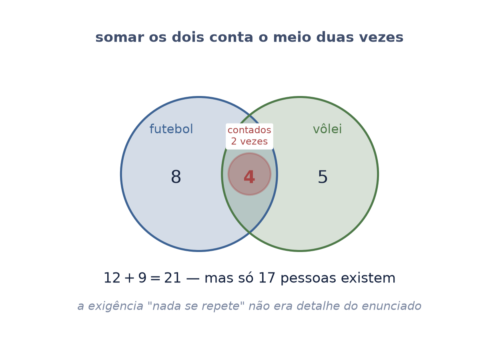
Se o meio foi contado duas vezes, tira-se ele uma vez:
"o tamanho de A união B é o tamanho de A, mais o tamanho de B, menos o tamanho de A interseção B".
Na turma: \(12 + 9 - 4 = 17\) pessoas praticam algum esporte.
Repare que o princípio aditivo do seminário 0 não estava errado — ele era um caso particular deste. Quando os conjuntos não se cruzam, \(|A \cap B| = 0\), e a fórmula vira a soma simples.
Isto se chama inclusão-exclusão: inclui tudo, exclui o excesso.
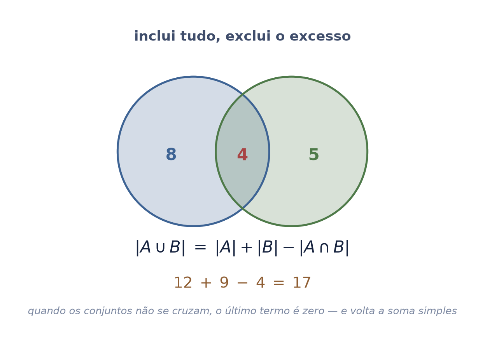
Some os três, tire os três cruzamentos de dois — e repare que o meio, onde os três se encontram, foi tirado vezes demais. Ele volta:
O sinal alternando não é um enfeite da fórmula: cada linha conserta o exagero da linha anterior. Somar demais, tirar demais, devolver — e o processo para exatamente quando não sobra exagero.
Com quatro conjuntos há mais uma linha, com sinal negativo. O padrão continua, e o nome também.
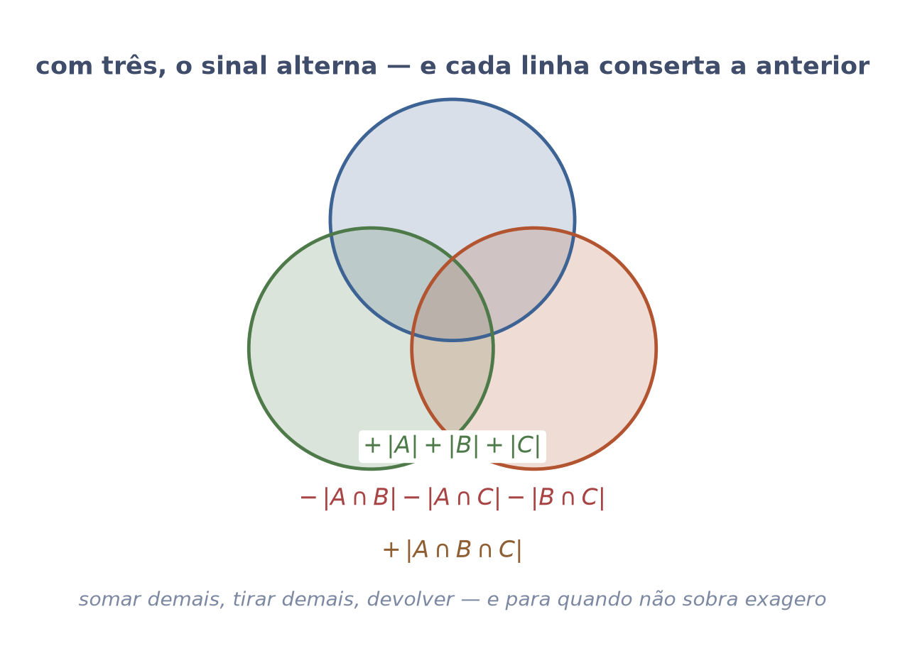
Três livros numa prateleira. Quantas ordens diferentes?
Pelo princípio multiplicativo: a primeira posição tem 3 candidatos; a segunda, 2 (um já foi); a terceira, 1.
Cada uma dessas ordens é uma permutação dos três livros.
Note de onde veio a conta: não é uma fórmula nova, é o princípio multiplicativo do seminário 0 com uma diferença — as opções diminuem a cada passo, porque o que já foi usado sai da lista.
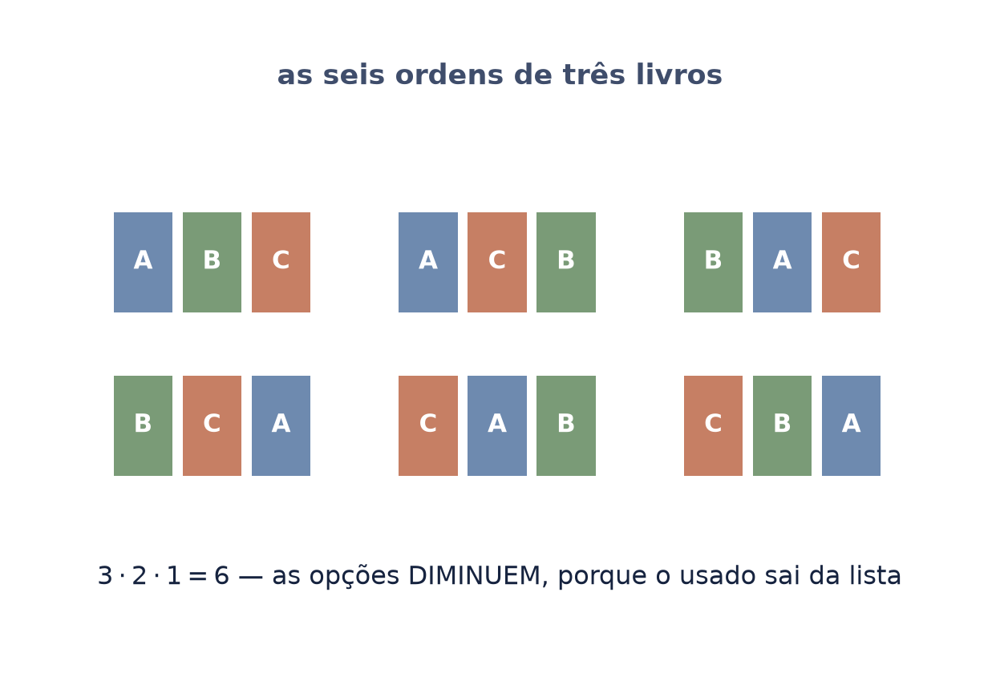
Com \(n\) coisas, o mesmo raciocínio dá:
"n fatorial".
| \(3!\) | 6 |
| \(5!\) | 120 |
| \(10!\) | 3 628 800 |
| \(20!\) | ≈ 2,4 quintilhões |
É aqui que "contar sem listar" deixa de ser elegância e vira necessidade. Listar as permutações de 20 objetos, uma por segundo, levaria mais tempo que a idade do universo. A conta cabe numa linha.
E guarde este número: uma matriz \(20 \times 20\) tem \(20!\) permutações, e o determinante dela é uma soma sobre todas. É por isso que ninguém calcula determinante por essa definição — mas é por ela que se entende o que ele é.
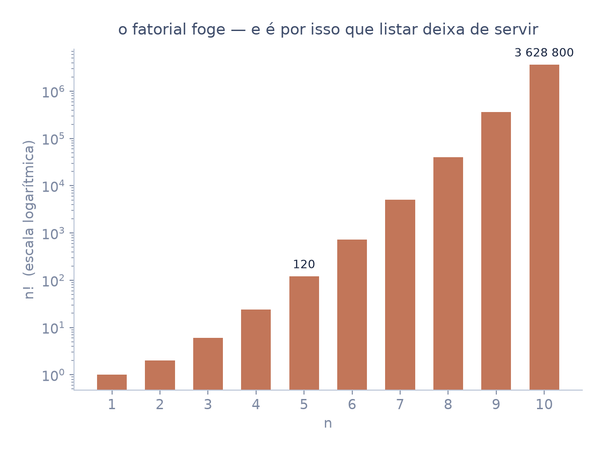
Uma permutação de \(n\) elementos também pode ser lida como um rearranjo: cada posição de saída recebe exatamente um elemento de entrada.
Num tabuleiro \(n \times n\), isso é pôr uma peça em cada linha sem repetir coluna. Cada arrumação dessas é uma permutação, e há \(n!\) delas.
As duas leituras — a fila e o tabuleiro — são a mesma coisa, e vale ter as duas. A fila é mais fácil de contar; o tabuleiro é o que o determinante usa, porque uma matriz já é um tabuleiro e escolher "uma casa por linha, sem repetir coluna" é exatamente o que cada parcela dele faz.
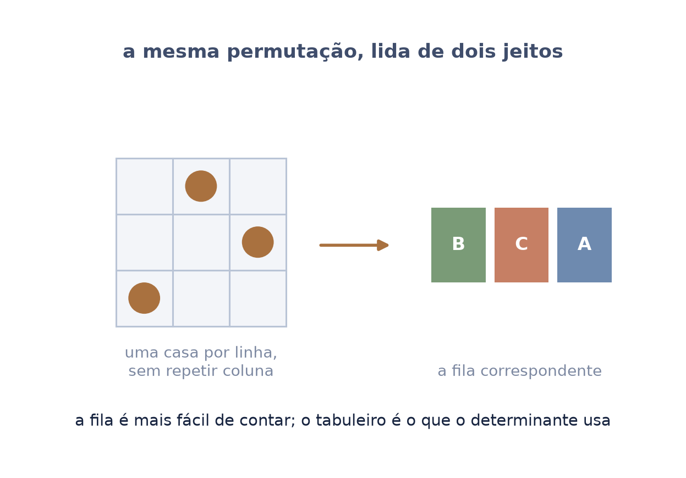
Pegue uma permutação e desmanche-a trocando dois elementos de lugar por vez, até chegar em \(1, 2, 3, \ldots\) Conte as trocas.
Há muitos caminhos, e eles usam números de trocas diferentes. Mas:
Ou seja: o número exato de trocas depende do caminho, mas a paridade não. Ela é da permutação.
Este é o fato que faz o determinante existir como número bem definido. Se a paridade dependesse do caminho, cada parcela dele poderia receber sinal \(+\) ou \(-\) conforme quem fizesse a conta — e o determinante não seria um número, seria uma opinião.
Uma permutação de paridade par chama-se par; de paridade ímpar, ímpar. É o único rótulo que o próximo episódio vai precisar.
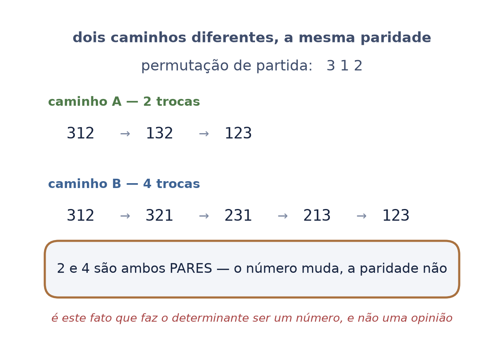
Numa corrida com 8 corredores, quantos pódios diferentes (ouro, prata, bronze) são possíveis?
A ordem importa: ouro para A e prata para B é um pódio; o contrário é outro.
É a permutação parando cedo — só as três primeiras posições:
A divisão por \((n-k)!\) é só um jeito compacto de dizer "pare depois de \(k\) fatores": o \((n-k)!\) embaixo cancela a cauda que não interessa.
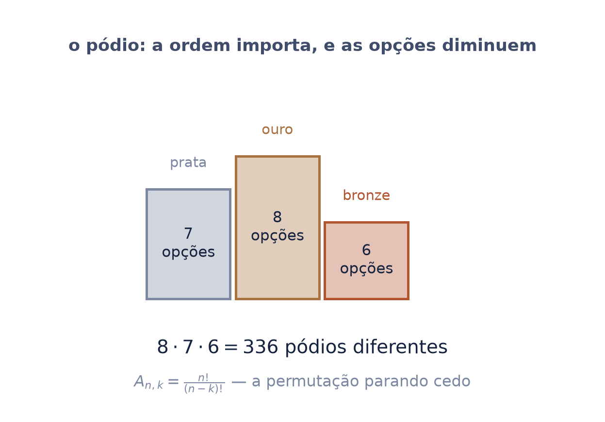
Mesmos 8 corredores. Agora a pergunta é: quantos trios podem subir ao pódio, sem dizer quem fica com qual medalha?
Aqui a ordem não importa: o trio {A, B, C} é o mesmo trio, listado de qualquer jeito.
Cada trio foi contado \(3! = 6\) vezes no arranjo — uma para cada ordem interna. Então divide-se por isso:
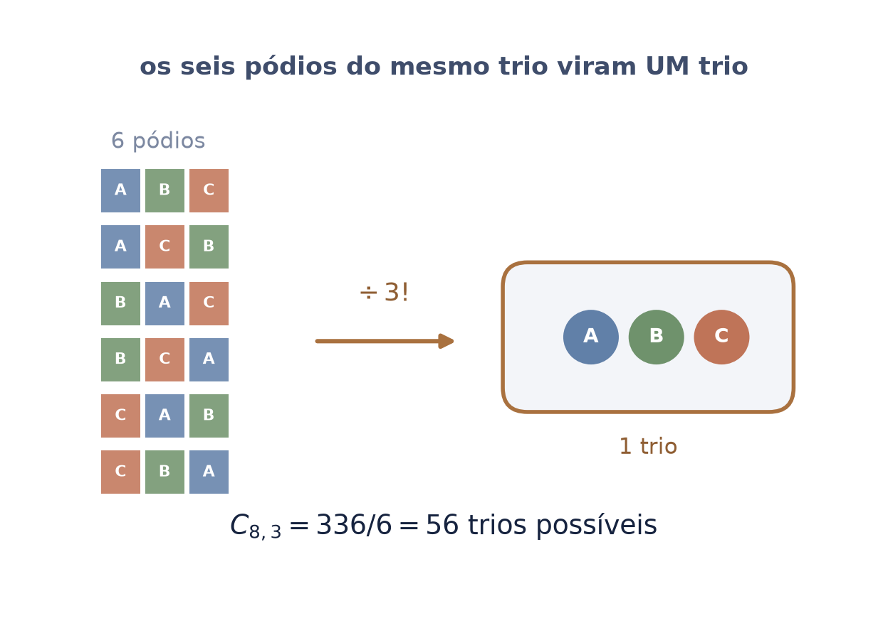
Arranjo e combinação não são fórmulas para decorar e escolher no chute. Há uma pergunta que decide:
Se dá, a ordem importa: arranjo. Se não dá, a ordem não importa: combinação.
| pódio (ouro, prata, bronze) | ordem importa → arranjo |
| trio que sobe ao pódio | ordem não importa → combinação |
| senha de 4 dígitos | ordem importa → arranjo |
| mão de 5 cartas | ordem não importa → combinação |
E a relação entre os dois é a divisão pela ordem interna: \(C_{n,k} = A_{n,k} / k!\). A combinação é o arranjo depois de esquecer a ordem.
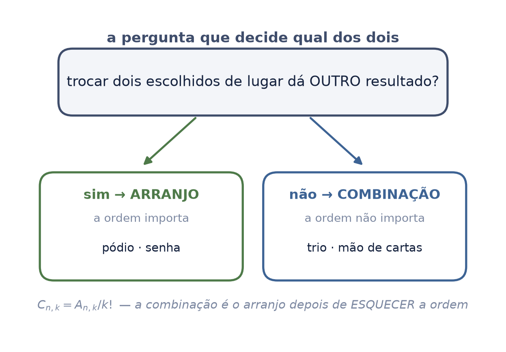
Uma senha de 4 dígitos. Cada posição aceita 0 a 9, e nada impede 1231.
As opções não diminuem: o dígito usado continua disponível. Então é o princípio multiplicativo puro, sem desconto:
Em geral, escolher \(k\) entre \(n\) com ordem e com repetição dá \(n^k\).
Compare com o pódio: lá, escolher A para o ouro tirava A da lista. Aqui não tira nada. A diferença entre \(8 \cdot 7 \cdot 6\) e \(10 \cdot 10 \cdot 10\) é essa, e é a única.
É também a potência do seminário 0 reaparecendo: quando o mesmo número se repete no produto, ele ganha expoente.
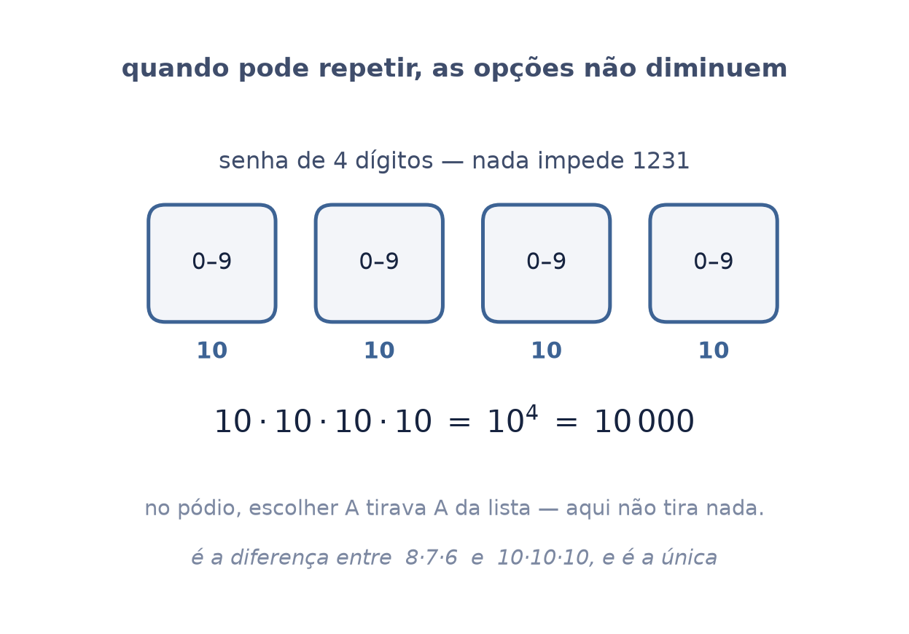
Comprar 5 salgados numa lanchonete com 3 sabores. Pode repetir sabor, e a ordem em que se pede não muda o pedido.
O truque: desenhe os 5 salgados como bolinhas e separe os sabores com 2 barras. Cada arrumação de bolinhas e barras é um pedido:
Então basta escolher, entre \(5 + 2 = 7\) lugares, quais 2 são barras:
Este é o momento mais bonito da estação, e é o que "contar sem listar" quer dizer: a pergunta difícil virou uma pergunta fácil, sem que ninguém listasse nada.
Não se contaram pedidos — contaram-se arrumações de bolinha e barra, que é a mesma coisa disfarçada. Trocar um problema por outro que já se sabe resolver é o método inteiro.
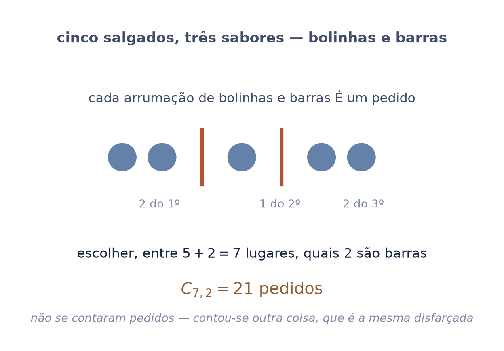
Uma matriz é um tabuleiro de números. Escolha uma casa por linha, sem repetir coluna — que é exatamente uma permutação — e multiplique os números escolhidos.
Faça isso para cada permutação e some tudo. Isso é o determinante.
A "regra de Sarrus", que a escola manda decorar para matrizes \(3\times3\), é esta soma com as 6 parcelas escritas por extenso. Ela não funciona em \(4\times4\) — e agora dá para ver por quê: seriam 24 parcelas, e o desenho das diagonais não as alcança.
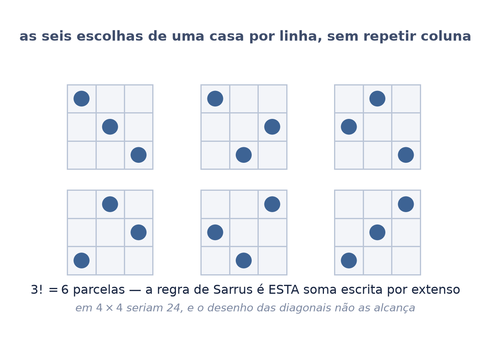
As parcelas não entram todas somando. Cada uma leva o sinal da permutação que a gerou:
É por isso que a folha da paridade estava nesta apresentação. Sem o fato de que a paridade não depende do caminho, o sinal de cada parcela seria arbitrário.
Isto responde uma pergunta que quase todo estudante faz e quase ninguém responde: de onde vêm os sinais alternados do determinante?
Não vêm de convenção nem de truque de memorização. Vêm de contagem — de quantas trocas cada arrumação está longe da ordem natural.
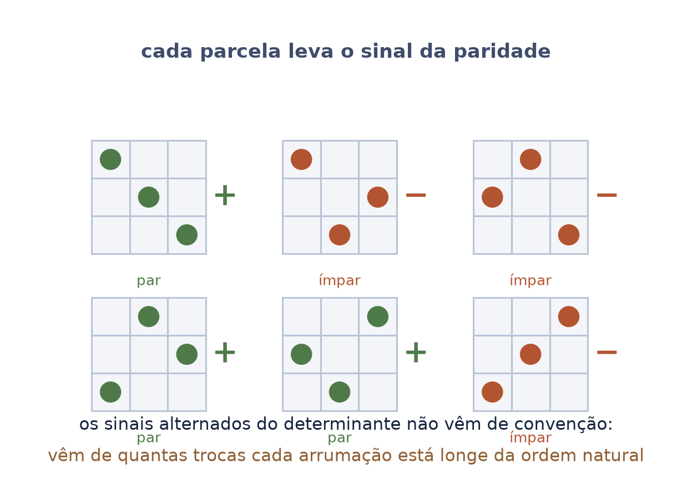
| inclusão-exclusão | somar quando os conjuntos se cruzam |
| permutação | a fila, e o tabuleiro de uma casa por linha |
| \(n!\) | quantas permutações existem — e como isso foge |
| paridade | par ou ímpar, e que não depende do caminho |
| arranjo e combinação | com ordem e sem ordem, com e sem repetição |
O G2 — Determinantes abre já podendo dizer "permutação" e "paridade" sem parar para ensinar. É o que esta folha entrega.
Esta apresentação não foi encaixada no arco por gosto de combinatória: ela existe porque o determinante é um objeto de contagem, e ensiná-lo sem isto obriga a decorar uma receita.
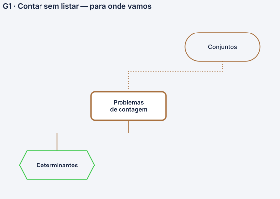
O conteúdo desta apresentação é análise combinatória elementar, matéria consolidada e sem autoria individual: os princípios aditivo e multiplicativo, inclusão-exclusão, permutação, arranjo, combinação, e as versões com repetição.
O que é recorte do autor: a decisão de entrar no arco GAAL antes dos determinantes, e de organizar a apresentação inteira em torno da ponte final — o determinante como soma sobre permutações, com o sinal vindo da paridade. A área é padrão; a ordem e o destino são escolha.
Ficaram de fora, por decisão: o binômio de Newton e o triângulo de Pascal. Pertencem à combinatória e o arco GAAL não os cobra em lugar nenhum — entrariam como apêndice sem destino.
Seminário G1 do arco GAAL, na série Um curso de visão computacional e geometria da imagem. Depende do seminário 0, e de nada além dele.
Autoria e composição: Mateus Felipe Alkimim Pereira, com Sara Catiele Nogueira Pereira (coautora); orientação de Rosivaldo Antônio Gohnan. Sob a norma de composição, a norma de notação e a norma de diagramas da Hipátia.
O mapa de pré-requisitos que abre e fecha esta apresentação é público: mateusalkimim.github.io/math-prerequisite-map. A seta que liga contagem a determinantes está lá, e diz de onde veio.